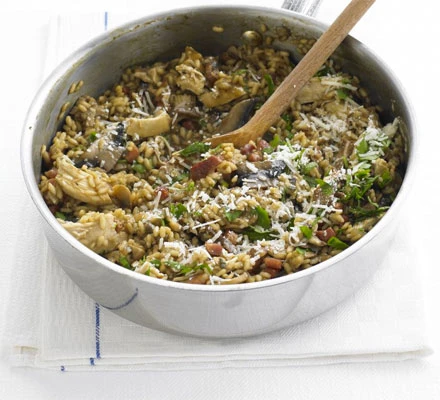

Risotto

A risotto oozing with rich winter flavours, perfect for a curl-up-on-the-couch meal
Ingredients
- 50g dried porcini mushrooms
- 1.3l chicken stock
- 250g pack dessert chestnut mushrooms , sliced
- 8 rashers smoked streaky bacon , chopped
- 50g butter
- 1 onion , finely chopped
- 300g risotto rice (we used arborio)
- 1 small glass white wine
- 50g parmesan , finely grated
- leftover roast chicken , skinned and chopped
- handful parsley leaves, chopped
Steps
- Soak the dried mushrooms in 500ml boiling water for 20 mins, then drain the liquid into the stock. The mushrooms will have absorbed a lot of the liquid; you should have 1.5l in total. Chop the soaked mushrooms and add to the chestnut mushrooms.
- Make the risotto: start by frying the bacon in half the butter, then add the onion. When they are soft, add the mushrooms and continue to cook for a few mins until soft. Stir through the rice and continue as in the basic recipe. When you add the final ladle of stock, stir through the chicken to reheat. Add the chopped parsley with the Parmesan and remaining butter, leave to rest for a few mins, then stir through and serve.